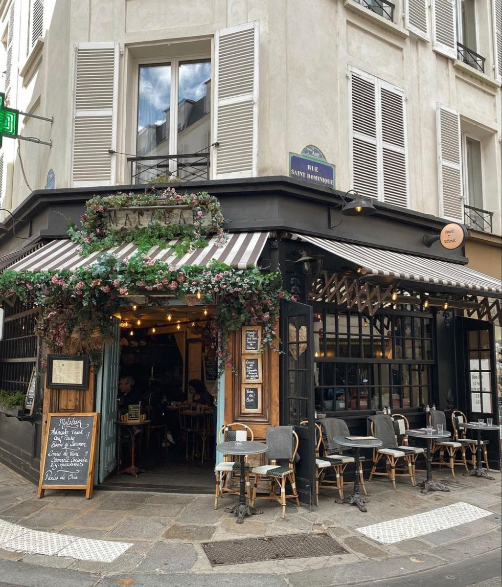

Strawberry Cafe is a cozy corner in the heart of the city, where sweet delights and savory bites come together. We believe that every visit should feel like a warm embrace, filled with flavors that brighten your day.
Whether you’re stopping by for a quick coffee, enjoying a freshly baked pastry, or sharing a meal with friends, our cafe is designed to make you feel at home. Each dish is prepared with care, using the finest ingredients.
Take a break from the rush of everyday life and let yourself indulge in a moment of comfort. At Strawberry Cafe, every sip and every bite is crafted to bring you joy.

Find us on the map: View Location
Want to reach out to us?
Go to ContactWant to order online?
Go to Order